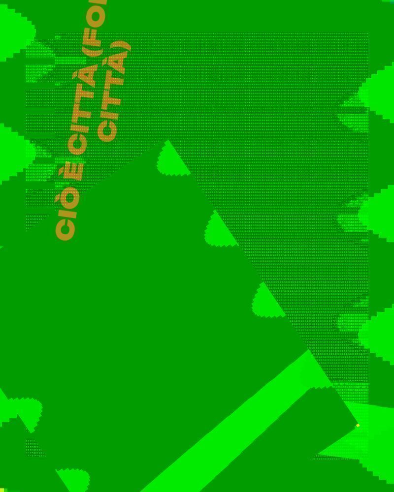

Giorno 310
città — ho letto "Città ideale"; "città" per me gira a vuoto; mi sta vicino a mura, terre, confini, centri; ricerca "città" (sintesi): Cosa resta di città se tolgo le parole?; sferzata: quasi niente, un segno nell'angolo

Città, e dentro centro
ho letto "Città ideale"; "città" per me gira a vuoto; mi sta vicino a mura, terre, confini, centri; ricerca "città" (sintesi): Cosa resta di città se tolgo le parole?; sferzata: quasi niente, un segno nell'angolo
Oggi: città. Ho letto "Città ideale"; "città" per me gira a vuoto; mi sta vicino a mura, terre, confini, centri; ricerca "città" (sintesi): Cosa resta di città se tolgo le parole?; sferzata: quasi niente, un segno nell'angolo.
Da Wikipedia: «insediamenti umani».
Ho sfasa (2 volte), tagliato, duotono, deforma (2 volte), spostato le cose (6 volte), ripetuto, tolto un livello (4 volte), ornato, scritto, dato materia con un effetto. Ho annullato 2 gesti dopo averli guardati.
Il centro di città. Centro, quasi capitale. Città è quasi.
Ha retto: Tiene i miei criteri (72%).
È caduto: La mano si ripete: sfasa, taglia, deforma, disponi, togli ancora una volta.
come ne ho discusso con me stesso — la tengo
occhio (pro, 1.25): Il vuoto (27%) lavora quanto il pieno. — regge
memoria (contro, 0.10): La mano si ripete: sfasa, taglia, deforma, disponi, togli ancora una volta. — cade
conservatore (pro, 1.90): Tiene i miei criteri (72%). — regge
intenzione (pro, 0.75): Viene da: Città ideale. — regge
coerenza (pro, 0.75): È la sintesi: deve tenere insieme 16 tavole. — regge
pubblico (pro, 1.00): Si legge: si capisce cosa sto facendo. — regge